Workshop · Part 1 of 2
Part 1 – From text predictor to chatbot
Agenda
Part 1 · How an LLM writes
DeepSeek V3 (2025): ≈ 60 TB of web pages, books, code in → 671 billion parameters out.
Unzipping is rebuilding: it regenerates a plausible text, not the original page.
Lore: Ted Chiang, The New Yorker (2023): “ChatGPT is a blurry JPEG of the web”.
Part 1 · How an LLM writes
Part 1 · How an LLM writes
Part 1 · How an LLM writes
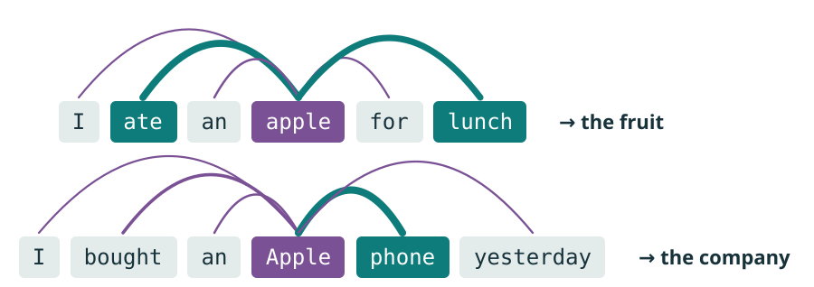
Lore: “Attention Is All You Need” (2017) introduced the Transformer, the “T” in GPT.
Part 1 · How an LLM writes
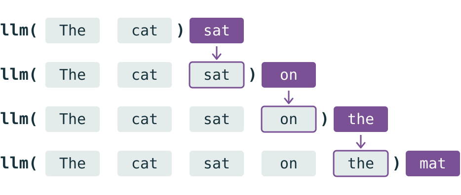
Part 1 · How an LLM writes
+ 99,996 other tokens, sharing the remaining 17%
Part 1 · How an LLM writes
Part 1 · How an LLM writes
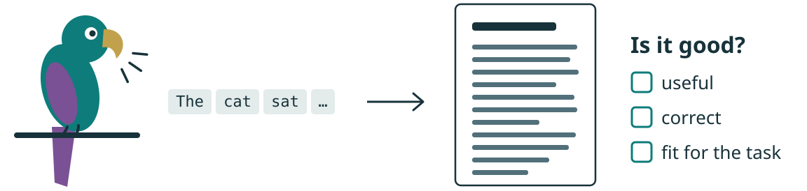
Lore: “Stochastic parrots” (Bender et al., 2021) is the best-known version of the worry.
Part 1 · How an LLM writes
The rules learned by compressing human text generalize to new text.
Lore: Claude Shannon, the father of information theory, widely assumed to be the namesake of Claude.
How it becomes a chatbot
Ask a raw LLM “What is the capital of France?” and it writes “What is the capital of Italy?”. How does it learn to answer?
Part 1 · How it becomes a chatbot
Lore: “Language Models are Few-Shot Learners”, the GPT-3 paper (2020).
Part 1 · How it becomes a chatbot
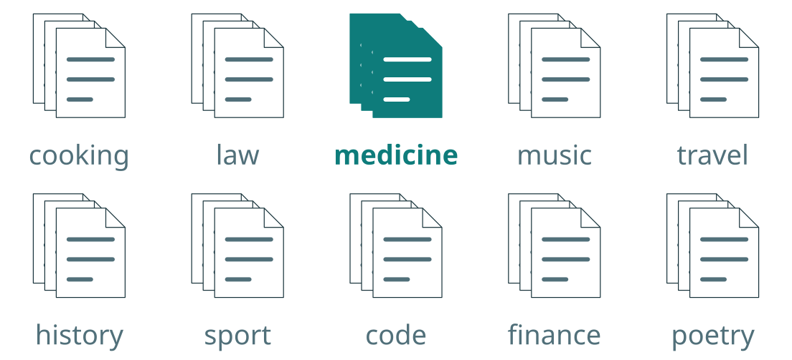
Part 1 · How it becomes a chatbot
Lore: ChatGPT (30 Nov 2022) was a GPT-3.5 model tuned on conversations like these.
Part 1 · How it becomes a chatbot
Part 1 · How it becomes a chatbot
Lore: April 2025: OpenAI rolled back a ChatGPT update that flattered users far too much.
Part 1 · How it becomes a chatbot
Lore: DeepSeek-R1 (Jan 2025) learned to reason this way in the open. It shook the industry and the stock market.
Part 1 · How it becomes a chatbot
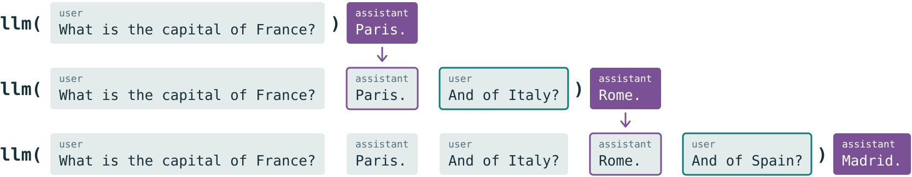
What to watch out for
It now answers like an assistant, but still writes token by token from what it read in training. Where does that trip it up?
Part 1 · What to watch out for
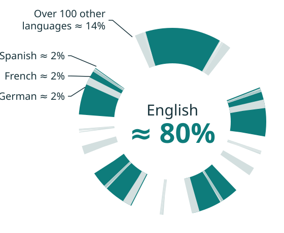
Part 1 · What to watch out for
Part 1 · What to watch out for
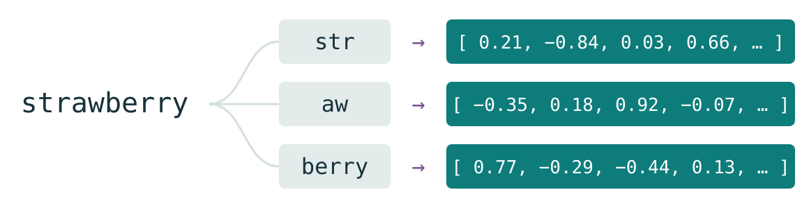
Lore: In 2024, chatbots kept saying “strawberry” has 2 r’s. It became a meme.
Part 1 · What to watch out for
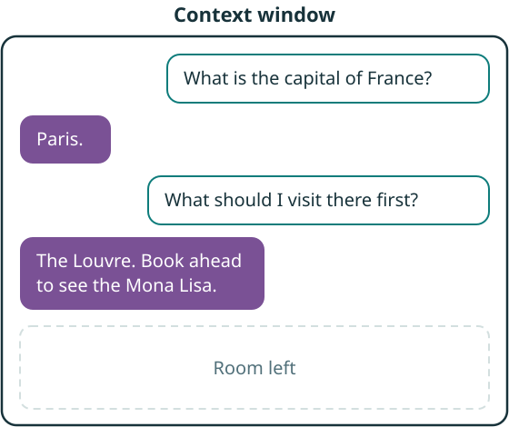
Lore: Claude Opus 4.6 was asked to list every spell in the first four Harry Potter books (about 733K tokens). It found 49 of the 50.
Part 1 · What to watch out for
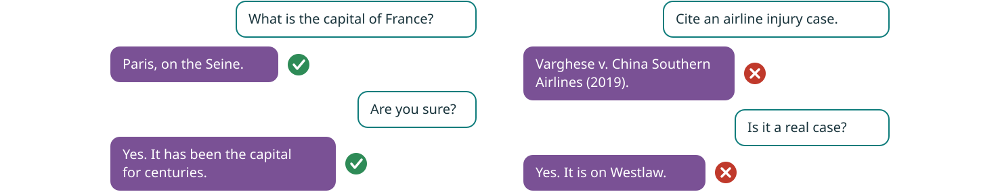
Lore: In 2023, lawyers filed a brief citing this case and five others invented by ChatGPT (Mata v. Avianca).
Part 1 · What to watch out for
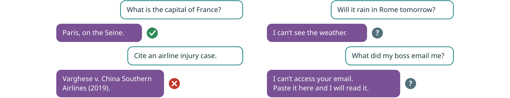
Part 1 · What to watch out for
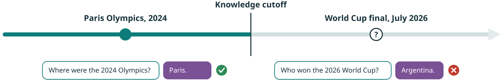
Part 1 · What to watch out for
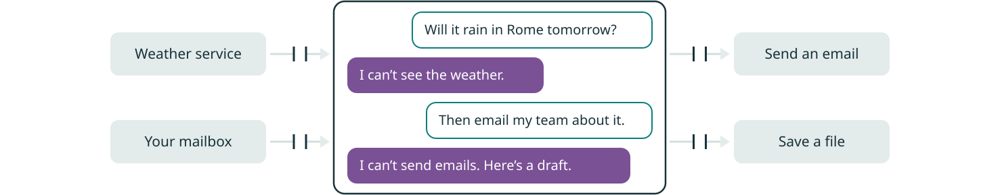
Part 1 · Conclusion
It writes remarkably well. Next: software that acts on what it writes.
Thank you
Next, in Part 2: agents, the software that does the rest, and where this is heading.